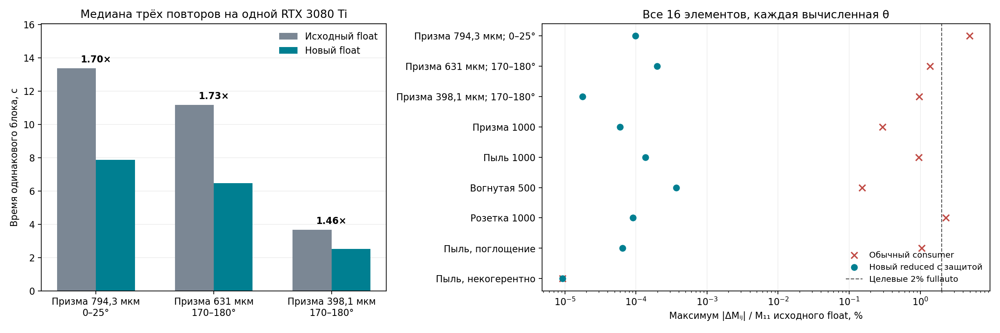

14 октября 2026 · MBS-fast · RTX 3080 Ti · CUDA sm_86.
На трёх блоках текущей серии получено ускорение 1,46–1,73×. Дополнительное отличие от прежнего float во всех проверках меньше 0,0004% в масштабе M11.

Фаза ϕ задаёт положение волны внутри её периода. В когерентном PO складываются комплексные поля; относительные фазы разных пучков сохраняются. Новый профиль строит фазу в double, вычитает целое число полных периодов и вычисляет синус и косинус оставшегося малого аргумента в float:
n = round(ϕ / (2π)) r = ϕ − n · 2π exp(iϕ) = exp(ir)
Два слитных умножения со сложением (FMA: одно округление на всю операцию) сохраняют младшую часть константы 2π. Для |ϕ| > 2²⁰ радиан используется прежняя double-тригонометрия. Если приращение фазы вдоль хотя бы одного учитываемого ребра меньше 0,125 радиана, весь многоугольник также вычисляет фазовые множители в double: вычитание почти равных значений чувствительно к округлению.
Геометрия пучков, коэффициенты Френеля, глубина отражений, отсечения и выборка ориентаций остаются теми же. Изменение ускоряет вычисление одной выборки; число ориентаций для статистической сходимости не уменьшается.
Все три строки измерены на одной карте gpu1. Сохранены реальные геометрии, λ = 0,532 мкм, m = 1,3116, сетки θ, φ = 64 и Sobol-offset соответствующих задач. Выборка уменьшена для короткого парного теста; число отражений — 6, 14 и 14. Время — медиана трёх запусков каждого профиля с чередованием порядка. Это замер блоков, а не полного достижения 2%.
| Задача | Ориентации | θ × φ | Было, с | Стало, с | Ускорение | Макс. отличие |
|---|---|---|---|---|---|---|
| Призма 794,3 мкм; 0–25° | 256 | 5925 × 64 | 13.388 | 7.878 | 1.70× | 0.000098% |
| Призма 631 мкм; 170–180° | 256 | 1228 × 64 | 11.182 | 6.476 | 1.73× | 0.000198% |
| Призма 398,1 мкм; 170–180° | 1024 | 119 × 64 | 3.670 | 2.519 | 1.46× | 0.000018% |
Проверены все 16 элементов матрицы Мюллера и отдельно Mij/M11 на одинаковых ориентациях. Метрика |ΔMij|/M11 использует M11 эталона в том же угле и не делит на малые или нулевые M12 и другие элементы.
Дополнительные формы: призма и розетка до 1000 мкм, частица 15 с Dmax = 1000 мкм, вогнутая частица, поглощающая пыль (Dmax = 500 мкм, λ = 1,55 мкм, m = 1,2906 + 0,00042407i), некогерентная пыль. Использована подготовленная триангулированная копия частицы 15 из предыдущей серии. Исходный Downloads/15_mbs.dat имеет неплоские грани и отклоняется проверкой геометрии.
FP64-контроль ниже: те же N, φ и seeds, 65 распределённых углов плюс до 12 наиболее чувствительных углов первой проверки. Максимальное расхождение нового float с double — около 0,066%. Основная часть уже присутствовала у прежнего float.
| Форма | Прежний float / double | Новый float / double | Новый / прежний float |
|---|---|---|---|
| Призма 794,3 мкм; 0–25° | 0.03722% | 0.03723% | 0.000052% |
| Призма 631 мкм; 170–180° | 0.00732% | 0.00733% | 0.000166% |
| Пыль 1000 | 0.04031% | 0.04029% | 0.000137% |
| Вогнутая 500 | 0.02099% | 0.02107% | 0.000380% |
| Розетка 1000 | 0.06556% | 0.06555% | 0.000091% |
| Пыль, поглощение | 0.06273% | 0.06272% | 0.000045% |
| Пыль, некогерентно | 0.01078% | 0.01078% | 0.000003% |
GPU-проверка exp(iϕ): более миллиона фаз, границы периодов и double-fallback до |ϕ| = 10¹⁰⁰; максимальная абсолютная ошибка комплексного значения — 1,923·10⁻⁷. Это проверка арифметики, а не самостоятельная гарантия точности интеграла после интерференции.
Старый consumer округляет большую фазу до float до её приведения к периоду. На призме 794,3 мкм он изменил отдельные элементы на 4,94% в масштабе M11, хотя глобальная L2-норма изменения мала. Первый reduced без защиты вычитания дал 0,14% на поглощающей пыли при 101°. После защиты рёбер максимум на этой задаче составил 0,000065%. Ранние попытки сохранены в архиве.
Сопоставлены снимки fullauto с одинаковыми ориентационными бюджетами; максимальное отличие — 0.00000499%. При возобновлении сохранено без изменений 117 файлов рассчитанных блоков и добавлена следующая выборка. В каждом запуске использовался один постоянный рабочий процесс на карту. Короткий тест ограничен числом раундов; он не является завершённым расчётом с точностью 2%.
make -C gpu fp32_reduced GPU_ARCH=86 -j gpu/bin/mbs_po_gpu_float_reduced --version /home/sasha_tvo_gpu1/mbs-fast/experiments/fp32-reduced-20261014/bin/run \ --method po --particle 1 794.3 196.2 \ --ri 1.3116 0 --wavelength-um 0.532 \ --fullauto 0.02 --fullauto-theta-range 0 25 \ --output /FULL/PATH/new_prism794_forward --close
Новых флагов усреднения не требуется. Версия сообщает phase-build-fp64 phase-trig-reduced-fp32 phase-fallback-fp64. Обёртка bin/run задаёт пути CUDA/WSL. Некогерентный режим проверен отдельно; его скорость практически не изменилась.
| Сервер | Полный путь | SHA256 |
|---|---|---|
| gpu2 | /home/sasha_tvo_gpu2/mbs-fast/experiments/fp32-reduced-20261014/bin/mbs_po_gpu_float_reducedЗапуск с библиотеками: /home/sasha_tvo_gpu2/mbs-fast/experiments/fp32-reduced-20261014/bin/run | 617643a52a5d9996b734284e1bb213e6bc6b2ad42989b07d25938377ccd16e3e |
| dima | /home/dima/mbs-fast/experiments/fp32-reduced-20261014/bin/mbs_po_gpu_float_reducedЗапуск с библиотеками: /home/dima/mbs-fast/experiments/fp32-reduced-20261014/bin/run | a14965b2370f050a7c70f18cc62f89f2666b549e85714808d56aaf3456ab9448 |
| ilya | /home/ilya/mbs-fast/experiments/fp32-reduced-20261014/bin/mbs_po_gpu_float_reducedЗапуск с библиотеками: /home/ilya/mbs-fast/experiments/fp32-reduced-20261014/bin/run | f57db38eb0c9e56a582d597a25a845f32f46305c9b96299892abb7a61ccad04c |
| gpu1 | /home/sasha_tvo_gpu1/mbs-fast/experiments/fp32-reduced-20261014/bin/mbs_po_gpu_float_reducedЗапуск с библиотеками: /home/sasha_tvo_gpu1/mbs-fast/experiments/fp32-reduced-20261014/bin/run | c3138b7243825a6a0d1d89082ddd9e02868edf45de84bcdee8c4ac0474882a3a |
Текущая длинная серия продолжает работу прежними замороженными бинарниками. Новая версия установлена отдельно. Существующий checkpoint восстанавливается исходным бинарником; пример выше создаёт новый каталог результата.
Живой профиль gpu1: около 197 с дифракции и 0,60 с подготовки пучков на блок; подготовка частично перекрывается с GPU. Ускорение поиска пересечений затронуло бы малую долю времени. MBS также требует отсечения многоугольных пучков и когерентного дифракционного интеграла. Выполненное изменение ускоряет доминирующую фазовую арифметику.
Сводный JSON · DAT, логи, команды, исходники и бинарники в архиве.
Проверки: tests/run_cuda_precision_profile_test.sh, tests/run_gpu_phase_reduction_test.sh, tests/test_gpu_reduced_profiles.py. Логи ранних неуспешных запусков сохранены; они не включены в итоговые замеры.